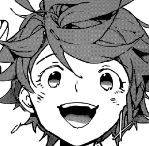
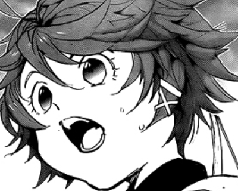
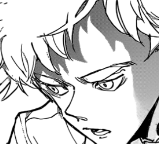

You wriggle out of his grasp and book it, running in the opposite direction without looking back. Questions began rambling in your head. What is this world? Where are you? How do you get out? You dash past the posh looking houses down a neighbourhood full of broken down and slum-like houses.
You dash within one with a wooden cottage that had a broken door. Within, dust particles flood your sense of smell and you're amazed by the furniture room covered in webs. There are four quarters to this complex - a living room, bathroom, kitchen and bedroom.
Still feeling unprotected, you quickly scout the area, you're eyes hovering on every spot that seemed like a good spot to hide. You make your way to the kitchen area ahead but before you could enter, a singular spot in the floor catches your attention. Its shaped like a handle as a scruffy, red flipped rug tries to hide its existence.
Curious and desperate, you go against your better judgement to leave it alone and surprisingly it creaks open. An underground basement. The best hiding spot.
Underneath was a regular-sized basement with a single dim, yellow light but after snooping around, you realize there are multiple dirt holes in every direction - human-sized.
Feeling stuffy, you take off the hoodie and you hear a feminine gasp to the right. You turn your head; a massive, packed crate.
"Who's there?"
She comes out looking somewhat your age. Her fluffy, short hair bouncing up, she's got a pair of gloves on and camouflage-like clothes. 
"You're one of us?!" she asks excitedly.
"What do you mean?"
"I've never seen you before!" She sighs happily and unveils the top part of her hair. A target-like mark was hovering up top her head.
"You see it don't you? It's a pureblood's mark! You're ripe for the taking!"
"WHAT?! Look I'm not from here... I don't understand anything you're saying. Isn't all of this just a myth?!"
Now, she rambles on, how you're in the demon's part of the world, actually the main city, where a ton of purebloods has been disappearing. Suddenly, you remember a book about this. She notices you're still confused.
"A pureblood is a chanced half-demon/full demon, who when ripened, attracts prey. At some point, you become over-ripe and they just stop coming at you but it's different for everyone! I've been running away for 3 years now! Others have it longer! But others, they get caught by the demons... Now you have two outcomes: either they eat you up since your meat is more delicious than normal or they use you as bait until you're over-ripe."
"You mean, the only to survive is to hide... and I've finally gotten outside..."
"But don't worry! You seem trustworthy enough so I'll tell you this" she comes closer and whispers, "We've almost found a way out!"
You lighten up but still hesitate to tell her anything about you.
"Come on, let's meet up with the others! The entrance is within another house!"
You both cautiously exit the basement and you hear a loud thud beyond the window. You slowly look over and you realize its Nicholas being apprehended by some humans.
"You've only got one, Nicky? Didn't you promise us all a piece of that?"

You lean in closer to hear their conversation.
"Let's talk somewhere private."
The bulky thugs take him somewhere.
"Hey! Come on, let's go now!"
Do you follow them or go with the girl?